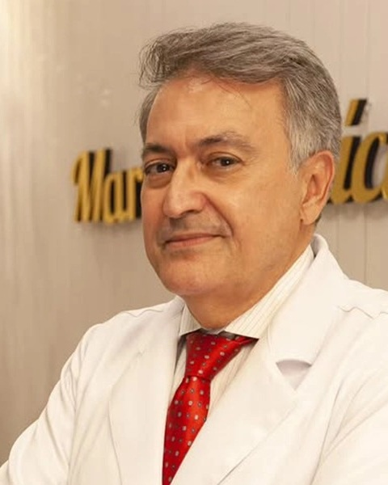

Início · Dr. Marcus
Marcus Vinicius Alfano Moscozo: formação, ensino e publicações.
Cirurgião plástico (CRM-BA 8601 · RQE 2730), membro titular da Sociedade Brasileira de Cirurgia Plástica e regente do Serviço de Cirurgia Plástica do Hospital São Rafael, credenciado pela SBCP. Cada informação desta página tem a fonte ao lado.
Formação
A formação, como ele a publica
No currículo que publica, na Doctoralia e no site antigo dele (cópia de 2019 no Internet Archive), o Dr. Marcus lista esta formação:
- 1986Graduação em Medicina pela Universidade Federal da Bahia (UFBA).
- 1988–1990Residência médica em cirurgia geral no HUPES, o hospital universitário da UFBA.
- 1992–1994Residência médica em cirurgia plástica no Hospital São Rafael, em Salvador.
No perfil da Sociedade Brasileira de Cirurgia Plástica, a formação aparece resumida: “Medicina UFBA / Cirurgia geral UFBA / Cirurgia plástica H São Rafael”.

Ensino
Hospital São Rafael: da residência à regência
Na lista de serviços credenciados de 2025, publicada pela SBCP na revista Plastiko's nº 243, o Serviço de Cirurgia Plástica do Hospital São Rafael aparece com o Dr. Marcus como regente. Segundo a revista, a SBCP atua “em parceria com as instituições de formação para análise e chancela da qualidade dos serviços oferecidos”, e “atualmente, são mais de 80 serviços credenciados em todo o país”.
Segundo o currículo dele, é preceptor do programa de residência médica do hospital desde 1995 e coordenou o Serviço de Cirurgia Plástica de 1997 a 2013. Em 2011, a Revista Brasileira de Cirurgia Plástica o apresentava como “Coordenador do Serviço de Cirurgia Plástica e Residência Médica do Hospital São Rafael”.
No capítulo publicado pela Springer em 2026, uma das afiliações dele é o programa de residência em cirurgia plástica do Hospital São Rafael. No CNES, ele aparece hoje como cirurgião plástico do hospital.
“As técnicas evoluíram, a segurança ganhou ainda mais espaço e os resultados passaram a valorizar cada vez mais a naturalidade e a individualidade.”Dr. Marcus, no Instagram, em 28/08/2026
Serviço público
Hospital Geral do Estado
O Dr. Marcus é cirurgião plástico do Hospital Geral do Estado da Bahia, com vínculo estatutário registrado no CNES. No currículo, ele conta que é plantonista de cirurgia plástica do hospital desde 1990.
O HGE é local de plantão, não de consulta: as consultas são no consultório da Pituba e no Hospital São Rafael.
Instituições
SBCP, CREMEB, cooperativa e congressos
SBCP
Membro titular da Sociedade Brasileira de Cirurgia Plástica, segundo a busca pública da sociedade.
CREMEB
Coordenador da Câmara Técnica de Cirurgia Plástica do Conselho Regional de Medicina do Estado da Bahia (página de dezembro de 2024).
Cooperativa
Presidente da Cooperativa dos Cirurgiões Plásticos da Bahia desde 2019, segundo o cadastro público de CNPJ.
Jornada Norte-Nordeste
Moderador de uma mesa-redonda na 39ª Jornada Norte-Nordeste de Cirurgia Plástica, em 28/08/2026.
“Porque, para mim, cuidar vai muito além do procedimento. É escutar, orientar, acolher e construir uma relação de confiança em cada etapa.”Dr. Marcus, no Instagram, em 08/09/2026
Publicações
Publicações
Marcus Vinicius Alfano Moscozo e Rafael Andrade Alves. Peixoto's Technique for Reduction Mammoplasty. Em: J. Avelar (org.), Breast Surgery. Cham: Springer, 2026, p. 231–244.
Francisco Aníbal Passos de Brito e Marcus Vinicius Alfano Moscozo. Sutura circunferencial da mama com agulha de Brito-Moscozo: técnica alternativa para sutura dos pilares nas mamoplastias. Revista Brasileira de Cirurgia Plástica, v. 31, n. 1, jan.–mar. 2016.
Francisco Marcelo de Oliveira Tavares, Cristina Maria Gomes Gil de Menezes, Marcus Vinícius Alfano Moscozo e outros. Retalho de omento: uma alternativa em cirurgia reparadora da parede torácica. Revista Brasileira de Cirurgia Plástica, v. 26, n. 2, jun. 2011.
Veja como a técnica de Peixoto e a agulha de Brito-Moscozo entram na cirurgia das mamas.
Transparência
Como conferir
- Categoria de membro: busca “Encontre um cirurgião”, da SBCP.
- Regência do serviço credenciado: revista Plastiko's nº 243 (PDF, p. 39).
- Câmara Técnica de Cirurgia Plástica: página do CREMEB.
- Vínculos com o Hospital São Rafael e o HGE: consulta de profissionais do CNES.
- Capítulo de 2026: SpringerLink.
- Artigos de 2016 e 2011: SciELO (2016) e SciELO (2011).
- Jornada Norte-Nordeste de 2026: programação oficial.
- Currículo publicado por ele: site antigo, cópia de 2019 no Internet Archive e perfil na Doctoralia.
- Registro médico: busca de médicos do CFM.
Dúvidas frequentes
Perguntas comuns
O Dr. Marcus é membro da SBCP?
Sim. Na busca pública da Sociedade Brasileira de Cirurgia Plástica, ele aparece como membro titular.
Qual é o registro dele?
CRM-BA 8601 e RQE 2730, em Cirurgia Plástica.
O que é um serviço credenciado pela SBCP?
É um serviço de formação de cirurgiões plásticos analisado e chancelado pela SBCP. Segundo a revista Plastiko's, a entidade atua “em parceria com as instituições de formação para análise e chancela da qualidade dos serviços oferecidos”.
Agende
Uma conversa com o Dr. Marcus, antes de qualquer decisão.
Atendimento com hora marcada no Centro Odonto Médico Linus Pauling, na Pituba, e no Hospital São Rafael. Combine dia, horário e local pelo WhatsApp (71) 99118-1690.